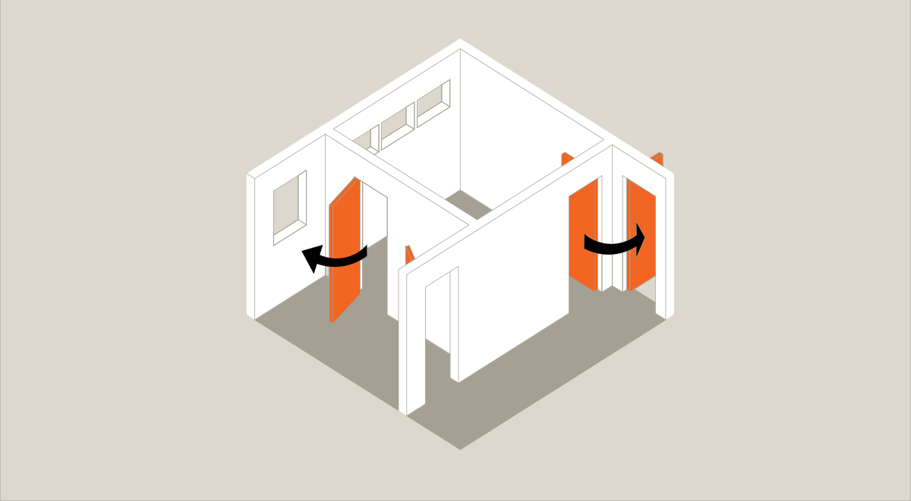
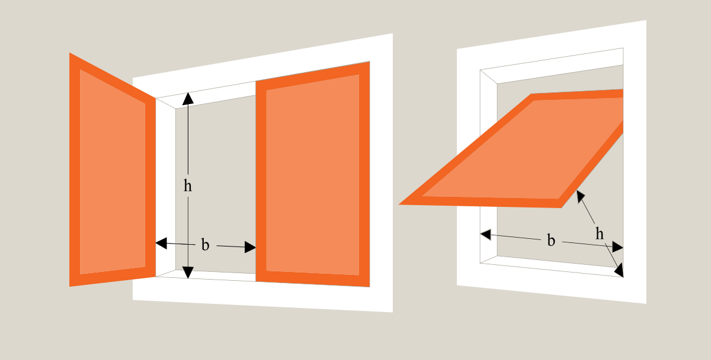
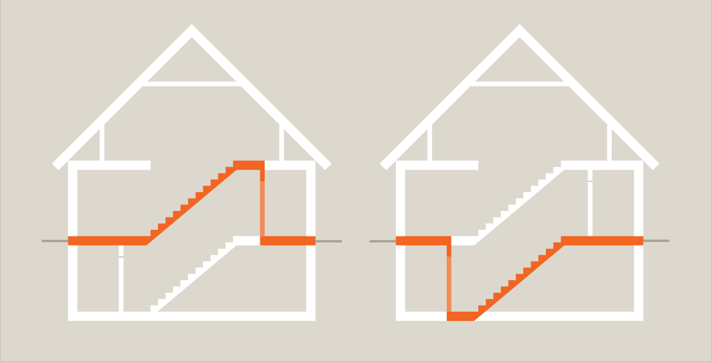
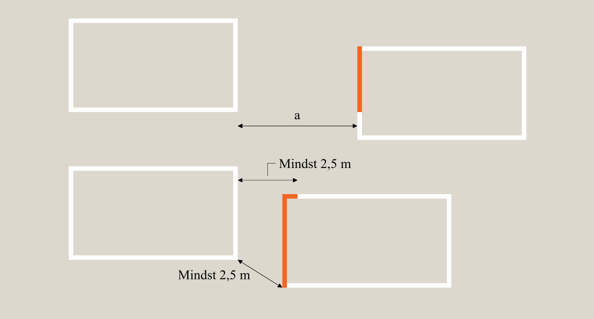
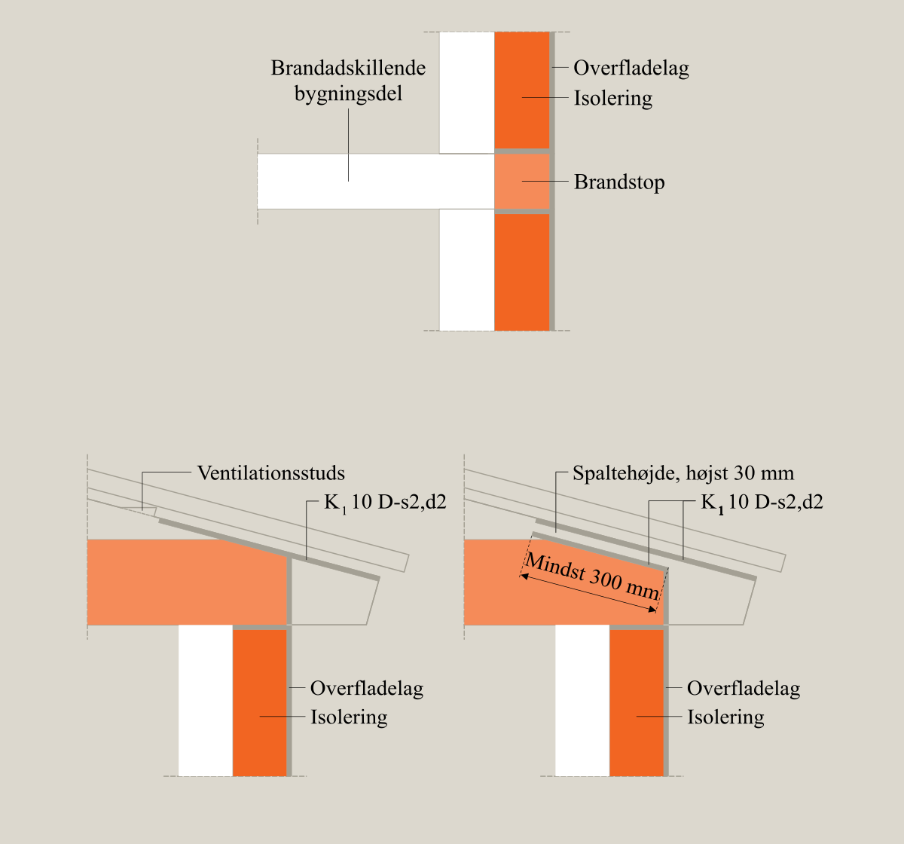
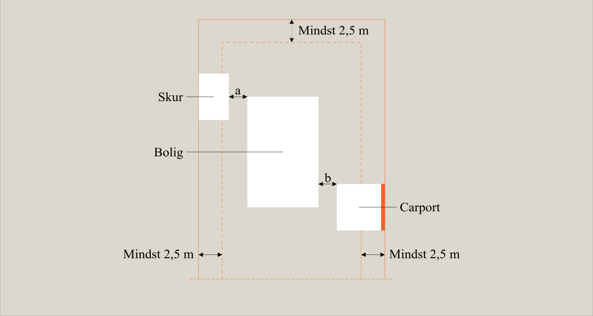
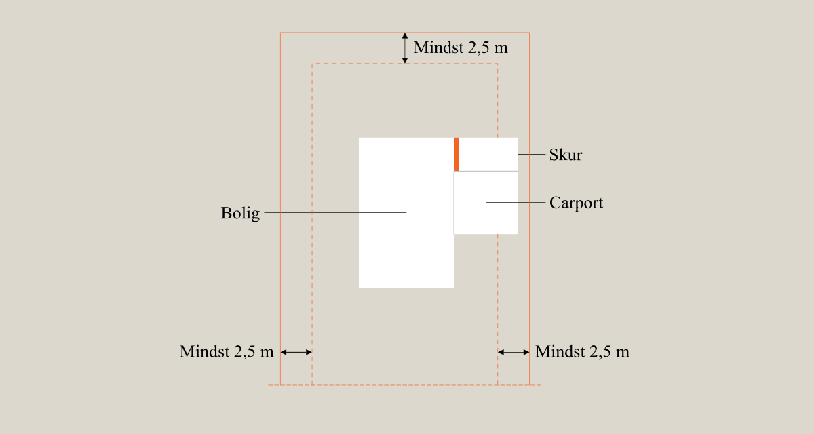

Swipe horisontalt for at se alle emner
Brand (§ 82 - § 158)
- BR18 (Aktuelt)
- BR18 (1/7-31/12 2025)
- BR18 (1/1-30/6 2025)
- BR18 (1/7- 31/12 2024)
- BR18 (1/1- 30/06 2024)
- BR18 (1/1- 31/12 2023)
- BR18 (17/9 - 31/12 2022)
- BR18 (1/7 - 16/9 2022)
- BR18 (1/1 - 30/6 2022)
- BR18 (29/6 - 31/12 2021)
- BR18 (1/1-29/6 2021)
- BR18 (1/7-31/12 2020)
- BR18 (10/3-30/6 2020)
- BR18 (1/1-9/3 2020)
- BR18 (4/7-31/12 2019)
- BR18 (1/1-4/7 2019)
- BR18 (1/7-31/12 2018)
- BR18 (1/1-30/6 2018)
- BR15 (2015-2018)
- Tidligere BR (1961-2010)
Bilag 1 - Præ-accepterede løsninger - Enfamiliehuse
Forord
Linket er kopieret
Denne vejledning indeholder præ-accepterede løsninger på, hvordan kravene om brandsikkerhed i bygningsreglementet 2018 kan opfyldes for enfamiliehuse mv.
Enfamiliehuse er i anvendelseskategori 4. Kendetegnet for disse bygninger er, at de er indrettet til natophold, hvor alle personer, som normalt opholder sig i bygningen, har kendskab til flugtveje og redningsforhold, og ved egen hjælp er i stand til at bringe sig i sikkerhed.
Ved at følge de præ-accepterede løsninger i denne vejledning sikres det, at bygningen har en tilfredsstillende sikkerhed for personer i tilfælde af brand. Denne vejledning kan således bruges til at dokumentere, at det enkelte byggeri overholder bygningsreglementets krav til brandsikring af netop denne type byggeri.
Vejledningen omfatter følgende typer bygninger:
- Bygninger med én bolig til helårsbeboelse, enten som fritliggende enfamiliehuse eller som helt eller delvist sammenbyggede enfamiliehuse med lodret lejlighedsskel, som for eksempel dobbelthuse, rækkehuse, kædehuse, gruppehuse og lignende,
- Bygninger med én bolig til helårsbeboelse, som er helt eller delvist sammenbygget med etageboligbygninger, erhvervsbygninger eller institutionsbygninger,
- Bygninger til sommerhuse, campinghytter, der ikke er omfattet af campingreglementet, og lignende ferieboliger, som er fritliggende eller udført med lodret lejlighedsskel, og
- Sekundær bebyggelse i forbindelse med ovenstående bygninger, såsom garager, carporte, udhuse, drivhuse og lignende mindre bebyggelse.
Ved enfamiliehuse forstås i denne sammenhæng bygninger i op til 2 etager, hvori der er indrettet én bolig. Hvor en tagetage kan indrettes eller anvendes til beboelse, skal denne medregnes som en af de 2 etager i boligen. I et enfamiliehus kan der ligeledes være en kælder, der dog ikke medregnes i etageantallet.
Ved boliger forstås de under a - c nævnte bygninger.
Vejledningen omfatter også enfamiliehuse, hvor en del af huset anvendes til erhverv, der sædvanligvis udøves i forbindelse med en bolig, som for eksempel frisør, ejendoms-, advokat-, revisor- og arkitektvirksomhed og lignende liberale erhverv samt dagpleje og lignende. Stuehuse ved landbrugsejendomme er også omfattet af denne vejledning.
I enfamiliehuse med integreret garage, carport eller udhus mv. regnes garage, carport og udhus at være en del af enfamiliehuset og ikke en selvstændig bygning. Garage, carport og udhus anses for at være integreret i et enfamiliehus, når det ligger under samme tagkonstruktion som enfamiliehuset.
Det fremgår af bygningsreglementet 2018, kap. 1, § 5, at følgende typer af byggearbejder skal overholde bygningsreglementet, men kan udføres uden ansøgning om byggetilladelse:
-
Opførelse af og tilbygninger til garager og carporte, der ikke er integrerede i den primære bebyggelse, samt udhuse, hønsehuse, drivhuse, overdækkede terrasser og lignende, når bygningerne tilsammen har et areal på højst 50 m².
-
Ombygninger af garager, carporte, udhuse, hønsehuse, drivhuse, overdækkede terrasser og lignende.
-
Ombygninger og forandringer af enfamiliehuse, dobbelthuse, rækkehuse og sommerhuse. Ombygningen eller forandringen må ikke medføre en væsentlig anvendelsesændring eller en udvidelse af etagearealet. En udvendig efterisolering på maksimalt 25 cm betragtes ikke som en udvidelse af etagearealet.
Det fremgår af bygningsreglementet 2018, kap. 27, § 490, at et byggeri skal indplaceres i en brandklasse (1-4) på baggrund af:
- Byggeriets risikoklasse, jf. § 86, og
- Den valgte metode for dokumentation af brandsikkerheden, jf. § 492.
Opføres et byggeri udelukkende efter de præ-accepterede løsninger i denne vejledning kan byggeriet anses for at være omfattet af brandklasse 1 (jf. BR18, kap. 27, § 493, stk. 1, nr. 1).
Der skal søges om byggetilladelse til byggearbejder i brandklasse 1, men der sker ikke en byggesagsbehandling af de tekniske forhold i bygningsreglementet 2018. Alt relevant dokumentation af brandsikkerheden skal dog fortsat fremsendes til kommunalbestyrelsen.
Brandklasse 1 omfatter i denne vejledning bygninger i risikoklasse 1, hvor brandsikringen sker ud fra vejledningens præ-accepterede løsninger. Der er tale om simpelt og traditionelt byggeri, der er kendetegnet ved, at personer, der opholder sig i byggeriet, på let vis selv kan bringe sig i sikkerhed på terræn i det fri.
Bygninger i brandklasse 1 er endvidere kendetegnet ved, at der er tale om mindre bygninger, der har et samlet etageareal på højst 600 m². Denne vejledning omfatter således for eksempel ikke rækkehuse, der har et samlet etageareal på over 600 m², idet disse indplaceres i en højere brandklasse.
Bygninger med vandret lejlighedsskel som for eksempel etageboliger og visse tofamiliehuse er ikke omfattet af denne vejledning.
Enfamiliehuse, der udformes eller skal anvendes på en måde, som ikke kan sidestilles med sædvanlig boligmæssig udformning og udnyttelse, er ikke omfattet af denne vejledning. Eksempler herpå kan være enfamiliehuse med mere end 2 etager og kælder, sammenbyggede enfamiliehuse med fælles adgangsparti, samt enfamiliehuse i anvendelseskategori 6.
Kolonihavehuse, hvis størrelse og placering er fastlagt i en lokalplan, byplanvedtægt eller tinglyst deklaration, godkendt af en offentlig myndighed, er delvist undtaget fra overholdelse af reglerne i bygningsreglementet 2018, kap. 5 om brand. Der stilles således kun krav om røgalarmanlæg, jf. bygningsreglementet 2018, kap. 1, § 6, stk. 1, nr. 4, litra b.
Vejledningen er inddelt i følgende emneafsnit:
- Generelt
- Evakuering og redning af personer
- Bærende konstruktioners brandmodstandsevne
- Antændelse, brand- og røgspredning
- Redningsberedskabets indsatsmulighed.
- Drift, kontrol og vedligehold
Vejledningen er opbygget således, at der i hvert emneafsnit først gengives de krav fra bygningsreglementet 2018, kap. 5 om brand, der skal overholdes ved opførelse af enfamiliehuse mv. Dernæst gives en række præ-accepterede løsninger til, hvordan funktionskravene kan overholdes.
Hvis en bygherre vælger at opføre sin bygning efter de præ-accepterede løsninger i denne vejledning, og bruges dette forhold til at dokumentere, at bygningsreglementets brandkrav er overholdt, så skal de præ-accepterede løsninger bruges i deres helhed. Fraviges de præ-accepterede løsninger i denne vejledning ved opførelse af et enfamilieshus mv., vil bygningen ikke længere være i brandklasse 1.
For yderligere og mere generel vejledning om brandsikring af byggeri henvises der til de overordnede beskrivelser i Bygningsreglementets vejledning til kapitel 5 - Brand.
Generelt
Linket er kopieret
Det fremgår af bygningsreglementet 2018, kap. 5, § 82, at bygninger skal have en tilfredsstillende sikkerhed for personer i tilfælde af brand. Brandsikkerheden i en bygning skal opretholdes i hele bygningens levetid. Design, projektering, udførelse, drift og vedligehold af bygninger skal ske under hensyn til bygningens anvendelse og under hensyn til, at:
- De anvendte materialer, bygningsdele, konstruktioner og installationer er brandmæssigt egnede i relation til deres placering og anvendelse.
- Der kan ske en sikker evakuering af personer i og ved bygningen.
- Konstruktioner har tilstrækkelig bæreevne i tilfælde af brand.
- Det sikres, at der ikke sker brandspredning til bygninger på anden grund, at brand- og røgspredning til andre bygninger på egen grund begrænses, at brand- og røgspredning i bygningen, hvor branden er opstået, begrænses i den tid, som er nødvendig for evakuering af bygningen.
- Det sikres, at redningsberedskabet har forsvarlig mulighed for afsøgning og redning af personer og mulighed for at gennemføre det slukningsarbejde, som er nødvendigt for afsøgning, redning og begrænsning af brandspredning.
- Det sikres, at driften af bygningen sker på en sådan måde, at sikkerheden i tilfælde af brand er opretholdt i hele bygningens levetid.
- Det sikres, at konstruktioner, bygningsdele og brandtekniske installationer kontrolleres og vedligeholdes løbende, så sikkerheden i tilfælde af brand opretholdes i hele bygningens levetid.
Bygningsreglementets § 82 definerer det overordnede personsikkerhedsniveau, som skal opnås i byggeri i brandsikkerhedsmæssig henseende og angiver således de overordnede rammer for, hvad en bygning skal leve op til med hensyn til brandsikkerheden. De specifikke elementer i § 82 kan alle have indflydelse på brandsikkerheden i en bygning. Der skal derfor tages hensyn til disse elementer, når en bygnings brandsikring udføres.
Dokumentation
Linket er kopieret
Det er bygningsejerens ansvar at sikre sig, at alle relevante brandkrav i bygningsreglementet er overholdt, jf. byggelovens § 17, stk. 1. Det er dermed også bygningsejerens ansvar at kunne dokumentere, at bygningen overholder de gældende brandkrav.
Det fremgår af bygningsreglementet 2018, kap. 29, § 506, at dokumentationen af et byggeris brandsikkerhed skal påvise, at brandforholdene er i overensstemmelse med de definerede brandkrav til sikkerhed i bygningsreglementet 2018, samt at design, projektering og udførelse er fyldestgørende og i overensstemmelse med brandkravene.
Ydermere fremgår det af bygningsreglementet 2018, kap. 29, § 521, stk. 2, at den fremsendte dokumentation skal dokumentere valg af brandklasse, og at byggeriets brandsikkerhed er i overensstemmelse med kravene til sikkerhed.
Byggearbejder, der kræver byggetilladelse, skal færdigmeldes til kommunalbestyrelsen, jf. bygningsreglementet 2018, kap. 1, § 40. Ved færdigmeldingen skal der blandt andet fremsendes dokumentation for overholdelse af bygningsreglementets 2018, kap. 5 om brand, jf. bygningsreglementet 2018, kap. 1, § 40, stk. 2.
For bygninger, der er omfattet af brandklasse 1, skal dokumentation af brandforhold bestå af alt for byggeriet relevant materiale, herunder overordnede beskrivelser, forudsætninger og tegningsmateriale, som for eksempel situationsplan, plan- og snittegning, der viser bygningernes placering på ejendommen i forhold til anden bebyggelse og i forhold til skel mod nabo, vej og sti.
Det skal ved det fremsendte dokumenteres, hvordan brandsikkerheden i den færdige bygning er udført, og at det er i overensstemmelse med de præ-accepterede løsninger i denne vejledning.
Evakuering og redning af personer
Linket er kopieret
Det fremgår af bygningsreglement 2018, kap. 5, § 91, at bygninger skal designes, projekteres og udføres, så der i tilfælde af brand kan ske en sikker evakuering og redning af personer.
Design, projektering og udførelse skal således sikre, at de personer, der opholder sig i bygningen, på sikker vis ved egen eller andres hjælp kan komme i sikkerhed uden for bygningen i tilfælde af brand. I enfamiliehuse, sommerhuse mv. skal kravet sikre:
- At personer kan blive opmærksom på en brands opståen
- Brug af redningsåbninger til personredning
Der udføres ikke egentlige flugtveje i enfamiliehuse mv, såfremt bygningen opføres efter denne vejledning, da der er tale om én brandmæssig enhed. Siden der som udgangspunkt ikke er flugtveje i enfamiliehuse, skal dørbredder blot opfylde kravene i bygningsreglementet 2018, §§ 52 og 207.
Tiltag til at gøre opmærksom på en brands opståen
Linket er kopieret
Det fremgår af bygningsreglementet 2018, kap. 5, § 92, at bygninger skal udformes, så personer kan blive opmærksom på en brands opståen, og så der hurtigt kan påbegyndes en sikker evakuering. Dette skal ske under hensyn til:
- Behov for tidlig detektering.
- Behov for varsling af personer i bygningen.
- Personers mulighed for og evne til ved egen hjælp at bringe sig i sikkerhed.
Ydermere fremgår det af bygningsreglementet 2018, kap. 5, § 93, stk. 1, nr. 4, at en boligenhed i bygningsafsnit i anvendelseskategori 4 skal udføres med røgalarmanlæg, som er tilsluttet strømforsyningen, og som udføres med batteribackup.
Præaccepterede løsninger for røgalarmanlæg
I alle boliger, skal der installeres røgalarmanlæg, og der skal være mindst én røgalarm i hver boligenhed. For at sikre funktionaliteten af røgalarmanlæg skal disse være tilsluttet bygningens normale strømforsyning og være udført med batteribackup. Anlægget skal kun varsle i den enkelte boligenhed. Hvis en boligenhed er i flere etager, skal der placeres mindst én røgalarm på hver etage, for at bygningsreglementets krav om mulighed for en hurtig evakuering er opfyldt.
Røgalarmerne skal placeres i forbindelse med eller i umiddelbar nærhed af de rum, hvor personer sover, da der her kan være risiko for, at en brand ikke bliver opdaget i tide, fordi personerne sover. Der skal ligeledes placeres en røgalarm i forbindelse med rum med installationer, som kan medføre en øget risiko for brand, for eksempel brændeovne og pejse.
For at sikre så hurtig en alarmering som muligt, er det hensigtsmæssigt at placere røgalarmer i hvert opholdsrum og gange / gangarealer. I rum, der alene anvendes til køkken, kan røgalarmer udelades, da mados kan medføre mange utilsigtede alarmer. Tilsvarende gør sig gældende for rum med åbne ildsteder, hvor det er hensigtsmæssigt at placere røgalarmen væk fra ildstedet.
Hvis der i en boligenhed skal være mere end én røgalarm, skal røgalarmerne være serieforbundne, således at aktivering af én røgalarm medfører aktivering af alle røgalarmer i boligenheden.
Redningsåbninger til personredning
Linket er kopieret
Det fremgår af bygningsreglementet 2018, kap. 5, § 97, at brandmæssige enheder til personophold skal indrettes med redningsåbninger, med mindre et tilsvarende sikkerhedsniveau kan opnås på anden vis.
Ydermere fremgår det af bygningsreglementet 2018, kap. 5, § 98, at redningsåbninger skal designes og udføres under hensyn til:
-
At personer i rummet skal kunne give sig til kende.
-
Antallet af personer, som rummet er beregnet til.
-
At redningsåbninger kan anvendes til redning af personer via redningsberedskabets stiger afhængigt af bygningens højde.
-
At redningsåbninger i brandmæssige enheder kan åbnes uden brug af nøgle eller særligt udstyr, når der opholder sig personer i de pågældende brandmæssige enheder.
Redningsåbninger giver de personer, der opholder sig i bygningen, mulighed for at give sig til kende over for personer udenfor bygningen, herunder redningsberedskabet. Derudover kan redningsåbninger give mulighed for, at personer enten ved egen hjælp eller med hjælp fra redningsberedskabet kan redde sig ud af bygningen. Fordi redningsåbningerne i tilfælde af brand skal kunne bruges af personerne i bygningen, skal de kunne åbnes uden brug af nøgle eller særligt udstyr.
Som det fremgår af § 97, så vil man kunne undlade at udføre bygningen med redningsåbninger, hvis det på anden måde sikres, at personer til enhver tid selv kan forlade bygningen og nå til et sikkert sted i det fri. Dette er ikke omfattet af de præ-accepterede løsninger og Brandklasse 1.
Præaccepterede løsninger for redningsåbninger
Selvstændige rum som beboelsesrum og køkken skal udføres med mindst 1 redningsåbning enten som vindue, dør eller lem direkte til det fri. Hvis der fra et rum er redningsmulighed gennem to af hinanden uafhængige naborum, kan redningsåbning i det pågældende rum udelades, jf. Figur 1. Princippet kan for eksempel anvendes i forbindelse med opsætning af en udestue foran en redningsåbning.

Figur 1: Adgang til redningsåbning via naborum
Placeringen af karnapper, udestuer og lignende må ikke hindre redningsberedskabets mulighed for adgang til redningsåbningerne. Dette er for eksempel opfyldt, hvis det er muligt at nå redningsåbninger, der ligger over karnapper, udestuer og lignende med en brandstige eller ved, at taget over karnapper, udestuer og lignende udføres trædefast.
Redningsåbninger skal udformes således, at:
- Der er en fri højde h på mindst 0,6 m og en fri bredde b på mindst 0,5 m. Der skal tages højde for, om redningsåbningerne er topstyret eller midterhængte vinduer, jf. Figur 2,
- Summen af højden h og bredden b er mindst 1,5 m, jf. Figur 2,
- Underkant af redningsåbninger, som er placeret mindre end 2,0 m over terræn, kan dog udføres med en højde h på mindst 0,5 m.
- Højden fra overkant af gulv til underkant af redningsåbning må ikke være større end 1,2 m. Alternativt kan der etableres et fast trin eller lignende, så redningsåbningen kan nås indefra.
- Redningsåbninger let og uhindret kan betjenes og fastholdes i åben stilling således, at der er fri passage såvel indefra som udefra.
- Solafskærmninger og lignende ikke kan forhindre brugen af redningsåbningerne.
- Redningsåbningerne let og uhindret kan åbnes indefra uden brug af nøgle eller særligt værktøj.

Figur 2: Udformning af redningsåbning.
Bærende konstruktioners brændmodstandsevne
Linket er kopieret
Det fremgår af bygningsreglementet 2018, § 99, at bygninger og bygningsdele i tilfælde af brand skal have en tilstrækkelig brandmodsstandsevne.
Ydermere fremgår det af bygningsreglementet 2018, § 99, stk. 2, at projektering og udførelse af bygningers konstruktioner skal ske under hensyn til, at:
- Evakuering af de personer, der opholder sig i bygningen, kan ske på sikker vis, og at der ikke sker væsentlige skader på bygningen.
- Der ikke sker skade på personer og bygninger på anden grund.
- Redningsberedskabet har forsvarlig mulighed for afsøgning og redning af personer og mulighed for at gennemføre det slukningsarbejde, som er nødvendig for afsøgning og redning samt begrænsning af brandspredning.
- Der ikke sker væsentlige skader på andre bygninger på egen grund, som kan medføre fare for personer eller redningsberedskabets indsatsmulighed.
Det er vigtigt at sikre, at bygningen i tilfælde af brand bevarer sin overordnede stabilitet i den tid, det tager at evakuere de personer, der benytter bygningen, og for at redningsberedskabet på forsvarlig vis kan gennemføre personredning.
Bærende konstruktioner omfatter blandt andet bærende vægge, søjler, bjælker, etageadskillelser, og lignende konstruktioner. Der stilles ikke krav til brandmodstandsevnen for tagkonstruktionen, men alene til de bygningsdele, som bærer tagkonstruktionen. Hvis tagrummet kan udnyttes, stilles der krav til brandmodstandsevnen for de bygningsdele, som bærer tagkonstruktionen, men der stilles ikke krav til brandmodstandsevnen for spærene i et uudnytteligt tagrum. Såfremt tagkonstruktionen er en del af bygningens samlede bærende system, og den har indflydelse på bygningens afstivende system overfor vandrette laster eller på andre bærende eller ikke-bærende bygningsdeles brandmodstandsevne, er det afgørende for brandsikkerheden, at disse udføres med en tilsvarende brandmodstandsevne som de konstruktioner konstruktionen afstiver mv.
Præaccepterede løsninger for bærende konstruktioners brandmodstandsevne
For alle boliger i 1 etage skal de bærende vægge, søjler, bjælker og lignende konstruktioner samt etageadskillelserne udføres mindst som bygningsdel klasse R 30.
For alle bygninger i 2 etager og kælder skal de bærende konstruktioner i kælderen og etageadskillelsen over kælderen udføres mindst som bygningsdel klasse R 60.
Der stilles ikke krav til brandmodstandsevnen for de bærende bygningsdele i altaner og trapper. Bygningsdele i altaner og trapper skal dog udføres mindst som materiale klasse D-s2,d2 [klasse B materiale].
Antændelse, brand- og røgspredning
Linket er kopieret
Det fremgår af bygningsreglementet 2018, § 104, at bygninger skal projekteres og udføres, så det sikres, at der i tilfælde af brand ikke sker væsentlig brand- og røgspredning. Dette skal ske under hensyn til, at:
- Risikoen for, at en brand opstår, begrænses.
- Brand- og røgspredning begrænses i den brandmæssige enhed, hvor branden er opstået.
- Brand- og røgspredning til andre brandmæssige enheder forhindres i den tid, som er nødvendig for evakuering og redningsberedskabets indsats.
- Brandspredning til andre bygninger på samme grund begrænses.
- Der ikke sker brandspredning til bygninger på anden grund.
Projektering og udførelse skal således sikre, at det forhindres, at der opstår brande, der udvikler sig så hurtig og bliver så store, at personer i bygningen ikke kan nå at bringe sig i sikkerhed, eller at redningsberedskabet ikke kan begrænse brandens udvikling.
Risiko for antændelse
Linket er kopieret
Det fremgår af bygningsreglementet 2018, kap. 5, § 105, at installationer og andre tiltag, som kan medføre en særlig risiko for, at en brand opstår, herunder eltavler, ladestationer, fyringsanlæg, aftrækssystemer og tilsvarende, skal placeres og udføres i bygningen, så risikoen for, at en brand opstår og spreder sig, minimeres.
Ydermere fremgår det af bygningsreglementet 2018, kap. 5 § 106, at det skal sikres, at rørgennemføringer, kanaler og lignende foranstaltninger til bortledning af varm røg ikke bidrager til antændelse af bygningsdele.
I forhold til antændelse er det vigtigt at sikre, at der i enfamilieshuse mv., hvor der kan være installationer, der kan være med til at starte en brand, tages de rette foranstaltninger for at minimere risikoen herfor.
For boliger skal der træffes brandsikringsforanstaltninger ved fyringsanlæg, herunder pejse, brændeovne og lignende, samt aftrækssystemer, herunder skorstene og røgrør. Bemærk, at gas- og oliefyr ikke er omfattet her.
I forbindelse med brændeovne, pejse og lignende anlæg samt dertil hørende skorstene og røgrør skal det sikres, at overfladetemperaturen på brændbart materiale holdes så lav, at der ikke er fare for antændelse. Det er i denne sammenhæng vigtigt at se på anlæggets udformning og producentens anvisning samt afstand mellem anlægget og det brændbare materiale.
Præaccepterede løsninger for fyringsanlægs afstand til brændbart materiale
Fyringsanlæg og aftrækssystemer, som er omfattet af en harmoniseret standard, skal være CE-mærket. For disse anlæg skal der være udarbejdet en ydeevnedeklaration, hvoraf den nødvendige afstand til brændbart materiale ofte vil fremgå. I disse tilfælde vil det være tilstrækkeligt, at de angivne afstande til brændbart materiale overholdes.
For anlæg, hvor det af ydeevnedeklarationen ikke fremgår, hvor langt fra brændbart materiale det skal opstilles, skal nedenstående afstande anvendes:
- Hvis den maksimale overfladetemperatur på anlægget ikke overstiger 85 °C, vil der normalt ikke være fare for antændelse, hvorfor der ikke skal foretages særlige foranstaltninger i forhold til ildstedets placering.
- Anlæg med en overfladetemperatur på mellem 85 °C og 100 °C skal holdes mindst 30 mm fra brændbart materiale.
- Ved anlæg med en maksimal overfladetemperatur mellem 100 °C og 150 °C skal afstanden være mindst 50 mm.
Opmærksomheden henledes også på, at der i forbindelse med indbyggede belysningsarmaturer kan optræde misfarvninger af f.eks. lofter allerede ved temperaturer på 60 °C.
| Anlægsdel | Afstand til brændbart materiale |
| Ildsteder | 500 mm (ved murede pejse og masseovne måles afstanden fra ildstedets indvendige side) |
| Skorstene |
100 mm |
| Vandrette røgrør | 300 mm |
| Lodrette røgrør | 225 mm |
| Alle røgrør med dimension Ø 80 – 100 mm fra pillebrændeovne |
225 mm (150 mm til gulv, forudsat gulvet er beklædt med en plade af ubrændbart materiale mindst som A2-s1,d0 eller A2fl-s1. Pladen må ikke være af glas) |
| Renselemme i skorstene |
200 mm |
For at forhindre gnister fra et ildsted til fast brændsel i at antænde en brand, skal gulvet under og omkring brændeovne, pillebrændeovne, masseovne og pejse udføres i eller dækkes af et ubrændbart materiale mindst som A2-s1,d0 eller A2fl-s1. Materialet skal gå mindst 300 mm frem foran lukkede ildsteder, som for eksempel brændeovne og mindst 500 mm foran åbne ildsteder som for eksempel pejse. Materialet skal desuden gå mindst 150 mm ud til hver side fra fyringsanlæggets åbning.
Lovligt installerede eltavler til normal brug i boliger anses for at være tilstrækkelig brandsikre og yderligere brandsikringsforanstaltninger vil derfor ikke være nødvendige.
Brand og røgspredning i det rum, hvor branden opstår
Linket er kopieret
Det fremgår af bygningsreglementet 2018, kap. 5, § 108, at indvendige overflader i rum ikke må bidrage væsentligt til brand- og røgspredning i den tid, som personer, der opholder sig i rummet, skal bruge til at bringe sig i sikkerhed.
Ydermere fremgår det af bygningsreglementet 2018, kap. 5, § 109, at indvendige overflader skal designes og udføres, så de ikke bidrager væsentligt til brand- og røgspredning som følge af overfladernes:
- Antændelighed.
- Brandspredning.
- Produktion af varme og røg.
- Produktion af brændende dråber og partikler.
Design og udførelse skal forhindre, at brand og røg kan spredes i et rum på grund af de indvendige overfladers brandtekniske egenskaber.
Præaccepterede løsninger for indvendige overflader
Indvendige væg- og loftoverflader i alle boliger skal udføres mindst som beklædning klasse K1 10 D-s2,d2 [klasse 2 beklædning].
Mod et uudnytteligt tagrum skal væg- og loftbeklædninger udføres mindst som beklædning klasse K1 10 D-s2,d2 [klasse 2 beklædning] med mindst 50 mm isolering af mindst materiale klasse D-s2,d2 [klasse B materiale]. Ved et isoleringsmateriale forstås i denne sammenhæng ethvert materiale, der har en densitet, som er mindre end 300 kg/m³.
Mod stråtag skal vægge og loftkonstruktioner omkring beboelsesrum udføres mindst som bygningsdel klasse REI 30.
Brand og røgspredning i den bygning, hvor branden opstår eller til bygninger på samme grund
Linket er kopieret
Det fremgår af bygningsreglementet 2018, kap. 5, § 111, at bygningen skal opdeles i en eller flere brandmæssige enheder.
Derudover fremgår det af bygningsreglementet 2018, kap. 5, § 118, at bygninger på samme grund skal placeres i en sådan afstand til hinanden eller udføres på en sådan måde, at brandspredning mellem bygningerne begrænses i den tid, som er nødvendig for evakuering og redningsberedskabets indsats.
Opdeling og placering af bygninger skal forhindre brand- og røgspredning i den bygning, hvor branden opstår, og til bygninger på samme grund.
Præaccepterede løsninger for brandmæssig opdeling i den enkelte boligenhed
I boliger med 2 etager og kælder, skal etageadskillelsen over kælderen udføres mindst som bygningsdel klasse EI 60. Trappe mellem kælder og stueetage skal enten adskilles fra kælder eller fra stueetage med bygningsdel udført mindst som klasse EI 60 og med dør mindst som dør klasse EI2 30-C, jf. Figur 3.
Enhver gennemføring i brandklassificerede bygningsdele skal udføres, så bygningsdelenes brandmæssige egenskaber ikke forringes.
Der er ikke yderligere krav til brandmæssige opdelinger i den enkelte boligenhed.

Figur 3: På skitsen til venstre er vist, hvorledes adskillelsen mod kælder skal ske i stueetagen. På skitsen til højre er vist, hvorledes adskillelsen skal ske i kælderen. Den brandmæssige adskillelse er vist med to nuancer af orange.
Præaccepterede løsninger for udvendige vægoverflader
Udvendige overflader på ydervægge skal udføres mindst som beklædning klasse K1 10 D-s2,d2 [klasse 2 beklædning]. Alternativt kan udvendige overflader udføres mindst som materiale klasse D-s2,d2 [klasse B materiale].
Uden på en ydervæg, der er udført med udvendig overflade mindst som beklædning klasse K1 10 B-s1,d0 [klasse 1 beklædning], kan der anbringes en regnskærm med bagvedliggende hulrum. Regnskærmen (inklusive ophængningssystemet) skal udføres mindst som materiale klasse D-s2,d2 [klasse B materiale], jf. Figur 4.

Figur 4: Eksempel på regnskærm
Præaccepterede løsninger for anvendelse af isoleringsmaterialer (indvendigt og udvendigt)
Isoleringsmaterialer skal anvendes på en sådan måde, at det ikke medfører en øget brandrisiko. Ved et isoleringsmateriale forstås i denne sammenhæng ethvert materiale, der har en densitet, som er mindre end 300 kg/m³.
Isoleringsmaterialer skal anvendes på følgende måde:
- Isoleringsmaterialer, der opfylder kravene til mindst materiale klasse B-s1, d0 [klasse A materiale], kan anvendes uden begrænsninger.
- Isoleringsmaterialer, der opfylder kravene til mindst materiale klasse D-s2,d2 [klasse B materiale], kan anvendes med de begrænsninger, der i den konkrete sammenhæng gælder for alle andre materialer.
- Isoleringsmaterialer, der ikke mindst er materiale klasse D-s2,d2 [klasse B materiale], kan anvendes:
- Ovenpå etageadskillelser, som er mindst bygningsdel klasse REI 60 A2-s1,d0,- I vægge, hvis isoleringsmaterialet på begge sider af en lodret bygningsdel er afdækket med mindst bygningsdel klasse REI/EI 30 A2-s1,d0,- I tagkonstruktioner, såfremt den underliggende del af tagkonstruktionen er mindst bygningsdel klasse REI/EI 30,- I terrændæk og i krybekælderdæk, eller- I bygninger, hvor gulv i øverste etage er højst 9,6 m over terræn, når:
- Isoleringsmaterialet er afdækket med mindst beklædning klasse K1 10 B-s1,d0 [klasse 1 beklædning] langs begge sider af en lodret bygningsdel og langs undersiden af en vandret eller skråtstillet bygningsdel, såfremt der ikke er hulrum mellem isoleringsmaterialet og beklædningen, eller- Isoleringsmaterialet er afdækket med mindst bygningsdel klasse EI 30 langs begge sider af en lodret bygningsdel og langs undersiden af en vandret eller skråtstillet bygningsdel.
Isoleringsmaterialer, der ikke mindst er materiale klasse B-s1,d0 [klasse A materiale], må ikke anvendes i bygninger, hvor højde til gulv i øverste etage er mere end 5,1 m over terræn, og som har bærende konstruktioner, der ikke er udført af mindst klasse A2-s1,d0 [ubrændbart materiale].
Endvidere må disse isoleringsmaterialer ikke anvendes uden på bygninger med tagdækning, som ikke er mindst tagdækning klasse BROOF(t2).
Til udvendig isolering af fritliggende enfamiliehuse og helt eller delvist sammenbyggede enfamiliehuse i højst 2 etager med ydervægge af letbeton, beton eller murværk, kan der anvendes isoleringsmateriale, der ikke er mindst materiale klasse D-s2,d2 [klasse B materiale], når disse inddækkes med et pudssystem eller tilsvarende udvendige overfladelag.
Det er generelt vigtigt at være opmærksom på, at isoleringsmaterialet inddækkes langs alle bygningsdelenes flader både lodret og vandret, så isoleringsmaterialet ingen steder er blotlagt.
Tilsvarende lag i forhold til et pudssystem er for eksempel natursten, keramik, mursten, beton og letbeton. En forudsætning er dog at overfladelag og isolering, prøvet som et samlet facadesystem, kan dokumenteres at overholde følgende kriterier ved prøvning efter den svenske brandprøvningsmetode SP FIRE 105 – Large scale testing og facade systems:
- Der må ikke falde store dele ned, for eksempel store pudsstykker, plader eller lignende, som kan udgøre en fare for personer under evakuering eller for redningsmandskabet,
- Brandspredning på overfladen samt i væggen skal begrænses til underkanten af vinduet, som er 2 etager over brandrummet, og der må ikke opstå flammer udvendigt, som kan give anledning til antændelse af tagudhæng, som er beliggende over vinduet 2 etager over brandrummet. Som ligeværdigt alternativ gælder, at røggastemperaturen umiddelbart under tagudhænget ikke må overstige 500 °C i en sammenhængende periode i mere end 2 minutter eller 450 °C i mere end 10 minutter. Kriteriet er et udtryk for, hvor meget det samlede facadesystem bidrager til brandens udvikling.
Ved brug af isoleringsmaterialer, der ikke er mindst materiale klasse D-s2,d2 [klasse B materiale], skal isoleringsmaterialet afdækkes langs alle bygningsdelenes flader, så isoleringsmaterialet ingen steder er blotlagt. Det er særligt vigtigt langs bygningsdelenes kanter og langs åbninger i bygningsdelene, for eksempel langs sokkel og langs åbninger til vinduer og døre, men også ved udtag til ventilation mv.
Facadesystemet skal monteres, som beskrevet i monteringsanvisningen fra leverandøren.
Se Figur 5 og Figur 6 for eksempler på områder, hvor det er vigtig at sikre, at afdækningen af isoleringsmaterialet, som ikke mindst er materiale klasse D-s2,ds [klasse B materiale], er udført korrekt.
Det skal sikres, at overfladerne på systemer med isoleringsmaterialer, der ikke er mindst materiale klasse D-s2,d2 [klasse B materiale], er robuste overfor de oftest forekommende belastninger, så sandsynligheden for at der opstår skader, som forringer brandsikkerheden, minimeres. Eftervisning af systemernes robusthed skal ske ved anvendelse af ISO 7892: 1988, Vertical building elements – Impact resistance tests – Impact bodies and general test procedures, som beskrevet i ETAG 004: 2000 Guideline for european technical approval of external thermal insulation composite systems with rendering.
Ved montage af isoleringsmateriale, der ikke er mindst materiale klasse D-s2,d2 [klasse B materiale], skal der tages hensyn til risikoen for antændelse af isoleringsmateriale, som endnu ikke er inddækket. Isoleringsmaterialet skal derfor løbende afdækkes under byggeprocessen, og evt. antændelseskilder skal holdes under kontrol.

Figur 5: Eksempler på områder, hvor det er vigtigt at sikre, at afdækningen af isoleringsmaterialet, som ikke mindst er materiale klasse D-s2,d2 [klasse B materiale], er korrekt udført. Figur 6 viser eksempler på inddækning ved disse områder.

Figur 6: Eksempler på indækning af isoleringsmateriale, som ikke mindst er materiale klasse D-s2,d2 [klasse B materiale. Bemærk at nr. 10 er eksempler på inddækning ved tagudhæng.
Præaccepterede løsninger for afstand mellem bygninger på samme grund afhængigt af tagdækning
Afstandene, som er beskrevet i dette afsnit, tager udelukkende højde for de brandmæssige forhold. Der kan derfor være andre forhold i bygningsreglementet, som medfører, at der skal være en større afstand til naboskel, sti- eller vejmidte.
Afstandene måles vandret uden hensyntagen til eventuelle terrænforskelle. Den angivne afstand er den mindste fri afstand mellem bygninger på samme grund. De beskrevne afstande kan for tagudhæng, vindskeder, lætage over døre, gesimser og lignende mindre bygningsdele normalt nedsættes med 0,5 meter.
Tagdækninger skal udføres mindst som tagdækning klasse BROOF(t2).
Karnapper, udestuer og lignende mindre bygningsdele kan dog udføres med transparente tagelementer klasse E-d2. Et transparent tagelement kan for eksempel være et ovenlys.
Tagdækning af strå (stråtag) opfylder ikke kravene til tagdækning klasse BROOF(t2) [klasse T tagdækning], men kan anvendes på enfamiliehuse, der er placeret mindst 7,5 m fra bygninger på samme grund med tagdækning klasse BROOF(t2), og mindst 10,0 m fra enfamiliehuse på samme grund med en tagdækning, der ikke er mindst klasse BROOF(t2). Ovenstående afstande kan kun anvendes, hvis stråtagene er brandsikret. For eksempler på bygningers placering på samme grund se Figur 7.

Figur 7: Afstanden mellem enfamiliehuse på samme grund, hvis et eller flere af bygninger har tagdækning, som ikke er tagdækning klasse Broof(t2), men hvor stråtagene er brandsikret.
Stråtaget er brandsikret når følgende er overholdt:
- Stråtaget er udført af traditionelle tagrør og tækket direkte, uden bagvedliggende hulrum, på en bagvedliggende bygningsdel klasse EI 30 udført af materiale klasse D-s2,d2 [klasse B materiale]. Tagdækningen af strå fastgøres til underliggende bygningsdel med ubrændbart materiale,- Over døre og andre redningsåbninger i bygninger skal stråtage sikres mod nedskridning ved brand.
Ved anden tagdækning, som ikke mindst er klasse BROOF(t2), eller hvor tagdækningen er med strå, hvor stråtaget ikke er brandsikret, kan denne tagdækning anvendes på bygninger, der er placeret mindst 12,5 m fra bygninger på samme grund med tagdækning klasse BROOF(t2), og mindst 20 m fra bygninger på samme grund med en tagdækning, der ikke er mindst klasse BROOF(t2), jf. Figur 8.
Et stråtag skal, uanset om det er brandsikret eller ej, sikres, så der ikke sker nedskridning over døre og redningsåbninger i tilfælde af brand.

Figur 8: Afstanden mellem enfamiliehuse på samme grund, hvis et eller flere af bygningerne har tagdækning, som ikke er tagdækning klasse BROOF(t2), og stråtagene ikke er brandsikret.
Særlige forhold ved sammenbyggede enfamiliehuse
Linket er kopieret
I brandmæssig henseende betragtes enfamiliehuse som sammenbyggede, når de ligger med mindre indbyrdes afstand end 5,0 m.
Præaccepterede løsninger for vandret brandspredning
Hvis der ligger flere enfamiliehuse på samme grund, skal bygningerne brandmæssigt adskilles fra hinanden på en sådan måde, at adskillelsen svarer til den brandmæssige adskillelse, som opnås i forbindelse med tilsvarende bygninger, der er placeret for tæt på skel på udmatrikulerede grunde.
Enfamiliehuse på samme grund, der ligger med mindre end 5,0 m indbyrdes afstand til hinanden, skal adskilles med bygningsdel klasse REI 60 uden åbninger, og adskillelsen skal slutte tæt til undersiden af den yderste tagdækning. Ved ydervægge, der ikke er udført af mindst materiale klasse B-s1,d0 [klasse A materiale], skal den brandadskillende bygningsdel mindst føres frem til indersiden af den udvendige beklædning, jf. figur 9.

Figur 9: Eksempel på, hvorledes den brandadskillende bygningsdel skal føres frem til indersiden af den udvendige beklædning.
Ved bygninger med tagudhæng må branden ikke kunne sprede sig uden om den brandadskillende bygningsdel via tagudhænget.
Danner to enfamiliehuse, som er placeret mindre end 2,5 m fra hinanden, en vinkel, der er mindre end 135°, eller er de placeret forskudt fra hinanden, skal det sikres, at der inden for en afstand på 2,5 m ikke sker vandret brandspredning mellem de to enfamiliehuse.
Sikring mod vandret brandspredning skal inden for afstanden på 2,5 m udføres med bygningsdel klasse REI 60 uden åbninger, som slutter tæt til undersiden af den yderste tagdækning.
Når vinklen mellem de to ydervægge er større end 135°, stilles der ingen krav til ydervæggenes brandmodstandsevne på grund af den nedsatte risiko for vandret brandspredning.
Hvis den vinkelrette afstand mellem bygningerne er mindre end 2,5 m, skal der sikres yderligere mod brandspredning langs ydervæggene, jf. figur 10.

Figur 10: Princip for brandmæssig adskillelse. A er større end 2,5 m men mindre end 5 m. Nederste tegning viser principper for vinkelsmitte.
Et enfamiliehus, som sammenbygges med eller ligger i en afstand på mindre end 5,0 m fra en bygning, der ikke er omfattet af denne vejledning, skal adskilles fra den anden bygning med bygningsdele mindst udført som bygningsdel klasse REI 60 A2-s1,d0. Adskillelsen skal slutte tæt til den yderste tagdækning. Ved ydervægge, der ikke er udført af mindst materiale klasse B-s1,d0 [klasse A materiale], skal den brandadskillende bygningsdel mindst føres frem til indersiden af den udvendige beklædning. Dette omfatter for eksempel også stuehuse, der sammenbygges med avls- og driftsbygninger.
Sammenbyggede enfamiliehuse kan udføres med stråtag, men der skal i disse tilfælde umiddelbart under stråtaget være indbygget en bygningsdel mindst klasse EI 30. Ethvert hulrum mellem undersiden af stråtaget og oversiden af den nævnte bygningsdel udført som mindst klasse EI 30 må intet sted have en højde, som er større end 100 mm, og hulrummet skal være lukket langs alle kanter af tagfladerne, således at en brand ikke kan sprede sig til hulrummet fra tagfladernes kanter. Lukningerne langs tagfladernes kanter skal udføres med mindst materiale klasse A2-s1,d0 [ubrændbart materiale].
Hulrum mellem stråtaget og oversiden af den nævnte bygningsdel udført som mindst klasse EI 30 må ikke passere bygningens brandcelleafgrænsende bygningsdele. På disse steder, skal der udføres brandstop.
For sammenbyggede enfamiliehuse gælder, at udvendig isolering med isoleringsmateriale, som ikke er mindst materiale klasse B-s1,d0 [klasse A materiale], skal afbrydes med brandstop for hvert enfamiliehus. Brandstoppet skal udføres med fastholdt isoleringsmateriale, som mindst er klasse A2-s1,d0, jf. Figur 11. Brandstoppet skal udføres, så det sikre, at der ikke sker brandspredning fra en bolig til den næste inden for den tid, det tager at evakuere bygningen. Brandstoppet skal udføres i en bredde svarende til den adskillende vægs bredde.
Når en regnskærm anvendes uden på en ydervæg med beklædning klasse K1 10 B-s1,d0 [klasse 1 beklædning], skal det ventilerede hulrum bag regnskærmen iagttages mod brandspredning mellem de sammenbyggede enfamiliehuses brandcelle- og brandsektionsafgrænsende bygningsdele. Brandadskillelserne skal her afbrydes med brandstop, der hindre at brand kan sprede sig via hulrum ud for en anden brandcelle. Brandstoppet skal udføres af et fastholdt isoleringsmateriale, der opfylder kravene til materiale klasse A2-s1,d0 eller træ eller træbaserede plader, som hindrer brandspredning mellem hulrum.

Figur 11: Eksempler på brandstop ved boligadskillelse, og inddækning af isoleringsmateriale, som ikke mindst er materiale klasse D-s2,ds [klasse B materiale] ved tagudhæng.
Brandspredning til bygninger på anden grund
Linket er kopieret
Det fremgår af bygningsreglementet 2018, § 125, at bygninger skal placeres i en sådan afstand til skel mod nabo, sti- og vejmidte, eller udføres på en sådan måde, at det sikres, at der ikke er risiko for brandspredning til bygninger på anden grund.
Præaccepterede løsninger for afstand til skel
Afstandene, som er beskrevet i dette afsnit tager udelukkende højde for de brandmæssige forhold. Der kan derfor være andre forhold i bygningsreglementet, som medføre at der skal være en større afstand til naboskel, sti- eller vejmidte.
Afstande måles vandret uden hensyntagen til eventuelle terrænforskelle. Den angivne afstand er den mindste fri afstand mellem bygninger og naboskel, vej- og stimidte. De beskrevne afstande kan for tagudhæng, vindskeder, lætage over døre, gesimser og lignende mindre bygningsdele normalt nedsættes med 0,5 m.
Ved beregning af afstand til naboskel, vej- og stimidte kan der ses bort fra tagdækninger på karnapper, udestuer og lignende mindre bygningsdele, som er udført med transparente tagelementer klasse E-d2.
En bolig skal placeres mindst 2,5 m fra naboskel, vej- og stimidte. Sommerhuse skal dog mindst placeres 5 m fra skel, vej- og stimidte for at overholde byggeretten, jf. bygningsreglementet 2018, kap. 8, § 178.
Ligger boligen tættere på naboskel, vej- eller stimidte end 2,5 m, skal ydervæggen mod naboskel, vej- eller stimidte udføres mindst som bygningsdel klasse EI 60 og slutte tæt til den yderste tagdækning.
Bygninger med tagdækning af strå (stråtag) eller anden tagdækning, som ikke er tagdækning klasse BROOF(t2) [klasse T tagdækning], skal placeres mindst 10 m fra naboskel, vej- og stimidte. Hvis stråtaget er brandsikret som beskrevet i afsnit 4.3.4 kan afstanden til naboskel, vej- og stimidte reduceres til 5 m.
Særlige forhold ved sekundær bebyggelse
Linket er kopieret
Sekundær bebyggelse omfatter garager, carporte, udhuse, hønsehuse, drivhuse, overdækkede terrasser og lignende.
I brandmæssigt henseende betragtes sekundær bebyggelse på samme grund som sammenbyggede, når der er mindre end 2,5 m mellem bebyggelserne. Sekundær bebyggelse der er sammenbygget betragtes som én bebyggelse med et samlet areal.
Det er ved sekundær bebyggelse vigtigt at forhindre, at der på en grund bliver en sammenhængende bebyggelse over skel, uden at bygningerne på grunden adskilles brandmæssigt.
Præaccepterede løsninger for sekundær bebyggelses afstand til andre bygninger på samme grund og til skel, vej- og stimidte
Sekundær bebyggelse med tagdækning, som ikke er tagdækning klasse Broof (t2) eller transparente tagelementer klasse E-2d, skal holdes i en afstand af 10 m fra andre bygninger på samme grund. Sekundær bebyggelse med brandsikret stråtag kan dog opføres i en afstand af 5 m fra andre bygninger på samme grund.
Sekundær bebyggelse skal holdes i følgende afstande fra naboskel, vej- og stimidte afhængig af deres tagdækning:
- Sekundær bebyggelse med tagdækning klasse BROOF(t2), eller transparente tagelementer klasse E-d2: 2,5 m
- Sekundær bebyggelse med brandsikrede stråtage: 5,0 m
- Sekundær bebyggelse med tagdækning, som ikke er tagdækning klasse BROOF(t2), brandsikrede stråtage eller transparente tagelementer klasse E-d2: 10,0 m
Sekundær bebyggelse med tagdækning klasse BROOF(t2), eller transparente tagelementer kan placeres i skel eller tættere på skel end 2,5 m, såfremt bebyggelsen er placeres enten 2,5 m fra andre bygninger (bolig og anden sekundær bebyggelse) eller udføres med væg mod skel mindst udført som bygningsdel klasse EI 60.
Hvis afstanden mellem bolig og udhus samt garage er mindre end 2,5 m, skal udhuset/garagen udføres med væg mod skel mindst udført som bygningsdel klasse EI 60, jf. Figur 12.
I tilknytning til sommerhuse, ferieboliger og campinghytter må sekundære bygninger ikke opføres tættere på skel mod nabo, vej- eller stimidte end 2,5 m.

Figur 12: Risiko for brandspredning til anden grund via småbygninger
I forbindelse med sammenbyggede enfamiliehuse skal sekundær bebyggelse, når den ligger i en afstand af mindre end 5,0 m fra enfamiliehuset, udføres med væg mod skel mindst som bygningsdel klasse EI 60. Væggen skal slutte tæt til den yderste tagdækning. Er der kun bygninger mod ét skel, kan der ses bort fra dette.
I forbindelse med et af skellene kan sekundær bebyggelse placeres tættere på et enfamiliehus end 2,5 m – eventuelt sammenbygges – uden særlig brandmæssige foranstaltninger imod skel, såfremt følgende er opfyldt for den sekundære bebyggelse:
- Det samlede areal af bebyggelse, der er placeres i eller tættere på skel end 2,5 m, er højst 50 m².
- De sider, der vender mod skel, har ikke en større samlet længde end 12 m. Anbringes en bebyggelse i et hjørne af grunden, medregnes kun den længste side. Anbringes en bebyggelse tættere på end 2,5 m til to modstående skel, medregnes kun den længste side. Udhæng på mere 0,5 m medregnes til bebyggelsen længde. Længden af en carport måles fra 0,5 m inden for tagfladens begrænsning.
- Ingen del af bebyggelsens ydervægge eller tag er højere end 2,5 over terræn eller det for bebyggelsen fastsatte niveauplan indenfor en afstand på 2,5 m fra skel.
- Ingen vinduer imod skel.
Er ovennævnte sekundære bebyggelse en garage eller et udhus, som sammenbygges eller ligger tættere på end 1,0 m fra enfamiliehuset, skal bygningerne adskilles fra enfamiliehuset med bygningsdele udført mindst som bygningsdel klasse EI 30. Bygningsdelen skal føres op i tæt forbindelse med den yderste tagdækning. Eventuel dør skal udføres mindst som dør klasse EI2 30-C, jf. Figur 13.

Figur 13: Bygninger mod ét skel
Særlige forhold ved integrerede garager, carporte og udhuse
Linket er kopieret
Garager, carporte og udhuse mv. anses for at være integrerede i en bolig, når de ligger under samme tagkonstruktion som boligen.
Præaccepterede løsninger for integrerede carporte, garager og udhuse mv.
Integrerede garager, carporte, udhuse mv. skal udføres med overflader på vægge og lofter mindst som beklædning klasse K1 10 D-s2,d2 [klasse 2 beklædning] . Ydervægge, bærende vægge, søjler, bjælker, etageadskillelser og lignende bygningsdele skal udføres mindst som bygningsdel klasse EI 30. Mod uudnyttelige tagrum skal vægge og loftskonstruktioner udføres som beklædning klasse K1 10 D-s2,d2 [klasse 2 beklædning] med isolering mindst udført som klasse D-s2,d2 [klasse B materiale]. Ved et isoleringsmateriale forstås i denne sammenhæng ethvert materiale, der har en densitet, som er mindre end 300 kg/m³.
Ved integrerede garager, carporte og udhuse, som placeres nærmere naboskel eller stimidte end 2,5 m, skal den integrerede garage, carport og udhus udføres med ydervægge mod skel mindst som bygningsdel klasse EI 60, der slutter tæt til den yderste tagdækning. Dette gælder også for enfamiliehuse med integrerede garager, carporte mv., der er sammenbyggede eller ligger med mindre indbyrdes afstand end 5,0 m. Enfamiliehuset og den integreret garage, carport og udhus skal adskilles med en bygningsdel udført mindst som bygningsdel klasse EI 30.
Såfremt der kun bygges mod ét skel og såfremt arealet af den integrerede garage, carport og udhus ikke er større end 50 m², kan den brandmæssige adskillelse ske mod enfamiliehuset i stedet for mod skel. Dette skal i så fald ske ved, at enfamiliehuset adskilles fra garagen, carporten, udhuset mv. med bygningsdel klasse EI 60, der slutter tæt til den yderste tagdækning. Ved ydervægge, udført med bygningsdel klasse EI 60, skal den brandadskillende bygningsdel mindst føres frem til indersiden af den udvendige beklædning.
For så vidt angår åbninger i form af døre, vinduer eller tilsvarende fra den integrerede del til beboelsen i den brandadskillende bygningsdel skal disse åbninger udføres med mindst samme brandmodstandsevne som den adskillende væg, for eksempel som dør klasse EI2 30-C eller dør klasse EI2 60-C.
Redningsberedskabets indsatsmulighed
Linket er kopieret
Det fremgår af bygningsreglementet 2018, kap. 5, § 126, at bygningers placering på grunden samt deres udformning skal sikre, at der i tilfælde af brand er forsvarlig mulighed for, at redningsberedskabet kan foretage afsøgning og redning og kan bistå evakuering af personer og dyr. Det skal ligeledes sikres, at der kan gennemføres det slukningsarbejde, der er nødvendig hertil samt til at begrænse væsentlig brandspredning mellem brandmæssige enheder.
Ydermere fremgår det af bygningsreglementet 2018, kap. 5, § 126, stk. 2, at design, projektering og udførelse skal ske under hensyn til, at:
- Der er adgangs- og tilkørselsforhold på grunden, så redningsberedskabet har mulighed for uhindret at komme frem til bygningen.
- Det i og uden for bygningen er muligt at fremføre det nødvendige udstyr til afsøgning og redning af personer samt til slukningsarbejde i forbindelse hermed.
- Bygninger indrettes, så der er mulighed for at kunne gennemføre en forsvarlig rednings- og slukningsindsats.
Præaccepterede løsninger for redningsberedskabets indsatsmulighed
For bygninger, der er indrettet til beboelse, skal der være anlagt befæstet vej i mindst 2,8 m bredde, så redningsberedskabet kan køre frem med slukningsmateriel til højst 40 m fra hver bolig.
Arealer beregnet til fremføring af redningsberedskabets køretøjer skal udføres synlige, og der skal ved planlægningen tages hensyn til køretøjernes drejeradius.
Redningsberedskabet skal kunne rejse stiger til enhver redningsåbning i bygningen.
Drift, kontrol og vedligehold
Linket er kopieret
Det fremgår af bygningsreglementet 2018, kap. 5, § 137, at drift, kontrol og vedligehold af brandsikkerheden i og ved bygninger skal ske, så det sikres, at sikkerheden i tilfælde af brand er opretholdt i hele bygningens levetid, jf. § 82.
Bygningen skal således i hele dens levetid overholde det overordnede personsikkerhedsniveau, som skal opnås i byggeri i brandsikkerhedsmæssig henseende.
Præaccepterede løsninger for drift, kontrol og vedligehold
Røgalarmanlæg skal løbende vedligeholdes. Røgalarmerne skal testes jævnligt, og batterier skal udskiftes efter behov.
Ved branddøre, for eksempel i den brandmæssige opdeling mellem kælder og stueetage, skal døren og eventuel dørpumpe, der sørger for branddørens selvlukkende funktion, testes jævnligt, så det sikres, at branddøren altid kan lukke automatisk.
I bygninger med udvendige overfladesystemer med isoleringsmaterialer, der ikke er mindst materiale klasse D-s2,d2 [klasse B materiale], er det vigtigt, at skader i overfladen, som kan forringe brandsikkerheden, løbende udbedres.